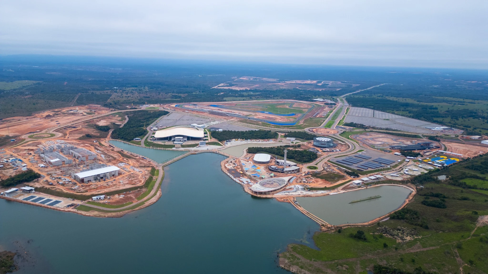

Parque Novo Mato GrossoExplore os espaços em perspectiva
Arraste para girar · Role para aproximar
Maquete ilustrativa · Implantação do projeto
O parque está ganhando vida.Preparando sua visita em miniatura

Explore os espaços e estacionamentos pela lista.